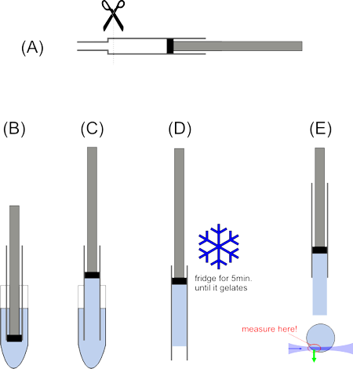

$$qf_commondoc_header.start$$ $$qf_commondoc_header.end$$
$$see:Also see the Tutorials for this plugin.$$
Introduction
Basics
Algorithm
The basic steps of this algorithm are:
- determine initial estimates of the bead positions in the first color channel
- For each color channel:
- For each initial bead:
- extract a ROI around the position
- check, whether the bead can be evaluated (distance to border, distance to other beads, ...)
- fit a 1D Gaussian function along the x-, y- and z-cut through the brightest pixel in the ROI
- fit a 1D Gaussian functions along the x-, y-cut for every z-position in the stack (cuts through the brightest pixel in the ROI)
- fit a 3D Gaussian function to the ROI
Find Initial Bead Position
First the initial bead positions are searched in the first (!!!) color channel:
- The algorithm steps through the stack wicth a stepsize of ROI_size_z/4. For each step:
- frameQ = quantile(frame, 1-pixels_per_frame/(width*height))
- The image is segmented into pixels, larger and smaller than frameQ. The larger pixels are initial possibilities for beads.
- min_distance = ROIS_size_xy/3
- calculate the distance matrix $( d_{i,j}=\sqrt{\left(x_i-x_j\right)^2 + \left(y_i-y_j\right)^2} )$ between all initial bead positions
- Go through the found beads:
- Determine the number of beads in the vicinity (< min_distance) of the bead
- If there is only one pixel, then we will use this position as possible bead (center of the ROI). Ignore this bead for the next steps.
- If there are more beads, use the brightest pixel as position as possible bead (center of the ROI). Ignore all beads for the next steps.
Recipe for gel with beads for lightsheet microscopy (LSFM/SPIM)
Pepare a gel containing a low concentration of sub-diffractive beads. We use:
- Prepare a few 1ml syringes by cutting off the top, where the syringe gets thinner (see image (A) below).
- 0.5% PhytaGel (P8169, Sigma-Aldrich) mixed with deionized water (shake thoroughly). Then heat in the microwave until the gellant dissolves completely.
We use 40ml water and 200µg PhytaGel.
- Add MgSO4 to an end concentration of 0.1%
We use 400µl of a 10% MgSO4 stock solution.
- While still >40°C, fill 1 ml of the solution into an Epi and add 5-10µl of 100nm TetraSpec beads (T-7279 from Invitrogen)
directly from stock. Vortex shortly. You can also use any other type of
bead, as long as the concentration is so low, that the beads are well
separated in the gel!
- pull up ~300-400µl from one Epi into a syringe (see image (C-D)) and refrigerate for 5min. at 4°C until the gel solidifies
- Measure a beadscan with 1000-2000 frames, displaced by ~200nm.
Take care to measure in the front part of the gel, so it does not alter
the optical properties of the microscope too much!

preparation of gel for beadscan
User Interface
$$see:Also see the Tutorials for this plugin.$$
- Select an RDR to evaluate on the list on the right
- Set all parameters for the evaluation on the rhs between the results plots and the RDR list:
- pixel size: the pixel size of your camera in nanometers
- step size: step size of the image stack in nanometers
- ROI lateral (xy): size of the ROI in x/y-direction, cut around each pixel in pixels. This should be at least 2-3 times larger than the expected PSF size in pixels and at least 5 pixels.
- ROI longitudinal (z): size of the ROI in z-direction, cut around each pixel in pixels. This should be at least 2-3 times larger than the expected PSF size in pixels and at least 5 pixels.
- bead search: pix/frame: This is the number of pixels pixels_per_frame, that is assumed to be a pixel in each frame. Increasing this number might lead to the recognition of more beads, but also to more false recognitions. You can estimate this number by estimating the number of beads in each frame and multiplying it by 2-3.
- est. PSF width (1/e2 halfwidth):: estimates 1/e2-width of the PSF in nanometers (e.g. 2*wavelength/NA)
- est. PSF height (1/e2 halfwidth):: estimates 1/e2-height of the PSF in nanometers (e.g. 2*wavelength/NA2)
- Click on Fit Current to run the evaluation (described above). After the evaluation has finished, you can look at the different results in the tabs on the left.